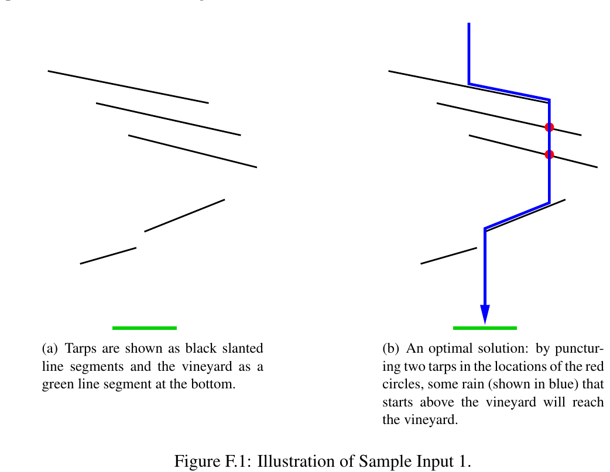

ICPC World Finals 2019 · Problem F
Porto and the nearby Douro Valley are famous for producing port wine. Wine lovers from all over the world come here to enjoy this sweet wine where it is made. The International Consortium of Port Connoisseurs (ICPC) is organizing tours to the vineyards that are upstream on the Douro River. To make visits more pleasurable for tourists, the ICPC has recently installed sun tarps above the vineyards. The tarps protect tourists from sunburn when strolling among the vines and sipping on a vintage port.
Unfortunately, there is a small problem with the tarps. Grapes need sunlight and water to grow. While the tarps let through enough sunlight, they are entirely waterproof. This means that rainwater might not reach the vineyards below. If nothing is done, this year’s wine harvest is in peril!
The ICPC wants to solve their problem by puncturing the tarps so that they let rainwater through to the vineyards below. Since there is little time to waste before the rainy season starts, the ICPC wants to make the minimum number of punctures that achieve this goal.
We will consider a two-dimensional version of this problem. The vineyard to be watered is an interval on the x-axis, and the tarps are modeled as line segments above the x-axis. The tarps are slanted, that is, not parallel to the x- or y-axes (see Figure F.1 for an example). Rain falls straight down from infinitely high. When any rain falls on a tarp, it flows toward the tarp’s lower end and falls off from there, unless there is a puncture between the place where the rain falls and the tarp’s lower end—in which case the rain will fall through the puncture instead. After the rain falls off a tarp, it continues to fall vertically. This repeats until the rain hits the ground (the x-axis).

For legal reasons you have to ensure that at least some of the rain that reaches the vineyard originated from directly above the vineyard. This is to prevent any vineyard from stealing all their rain from neighboring vineyards (see the second sample input for an example).
The first line of input contains three integers ℓ, r and n, where (ℓ, r) (0 ≤ ℓ < r ≤ 109) is the interval representing the vineyard and n (0 ≤ n ≤ 5·105) is the number of tarps. Each of the following n lines describes a tarp and contains four integers x1, y1, x2, y2, where (x1, y1) is the position of the tarp’s lower end and (x2, y2) is the position of the higher end (0 ≤ x1, x2 ≤ 109, x1 ≠ x2, and 0 < y1 < y2 ≤ 109). The x-coordinates given in the input (ℓ, r, and the values of x1 and x2 for all tarps) are all distinct. The tarps described in the input will not intersect, and no endpoint of a tarp will lie on another tarp.
Output the smallest number of punctures that need to be made to get some rain falling from above the vineyard to the vineyard.
10 20 5 32 50 12 60 30 60 8 70 25 70 0 80 15 30 28 40 5 20 14 25
2
2 4 2 3 2 0 3 5 2 1 5
1